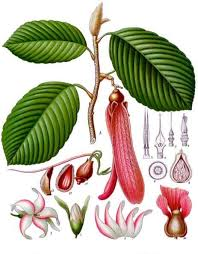

Dipterocarpaceae
Dipterocarp Family / Meranti Family / Lauan Family
Dipterocarpaceae is a large and ecologically dominant family of mostly tropical trees, renowned for forming the canopy and emergent layers of rainforests, particularly in Southeast Asia. They are characterized by their often large size, resin production, simple alternate leaves with stipules, and distinctive fruits – typically a nut surrounded by two or five persistent, enlarged, wing-like sepals. The family is a major source of tropical timber (Meranti, Lauan) and belongs to the order Malvales.
Overview
The Dipterocarpaceae family includes about 16-17 genera and nearly 700 species. Its center of diversity is Southeast Asia (especially Borneo, Sumatra, Malay Peninsula), where its species dominate vast areas of lowland and hill rainforest. Smaller groups occur in Africa, Madagascar, and a distinct subfamily (Pakaraimoideae) is found in the Guiana Shield region of South America.
These are typically large, resinous trees, often reaching great heights and forming the emergent canopy layer. Key characteristics include their simple, alternate leaves with stipules (often leaving scars), 5-parted flowers often with numerous stamens, and the highly diagnostic fruit – a nut subtended or surrounded by 2 or 5 enlarged, wing-like sepals that aid in wind dispersal (giving the family its name: di-ptero-carp = two-winged fruit). Phylogenetically, Dipterocarpaceae belongs to the Rosid order Malvales.
The family is of immense ecological and economic importance. Dipterocarp forests are hotspots of biodiversity, and the timber (known commercially by names like Meranti, Lauan, Keruing, Kapur) is globally significant, though heavy logging poses a major conservation threat to many species and ecosystems.
Quick Facts
- Scientific Name: Dipterocarpaceae Blume
- Common Name: Dipterocarp Family, Meranti Family, Lauan Family
- Number of Genera: Approximately 16-17
- Number of Species: Approximately 680-700
- Distribution: Primarily Tropical Asia (SE Asia dominant), also Africa, Madagascar, N South America.
- Evolutionary Group: Angiosperms - Eudicots - Rosids - Fabids - Malvales
- Habit: Mostly large, resinous, evergreen trees.
Key Characteristics
Growth Form and Habit
The vast majority are medium to very large evergreen trees, often reaching heights of 40-70 meters or more. They typically have tall, straight, cylindrical trunks, often with buttresses at the base. Some smaller trees or shrubs exist. Plants characteristically produce resins (dammar), often visible as exudates on the trunk.
Leaves
Leaves are arranged alternately (spirally). They are simple, usually with entire margins (sometimes wavy or slightly scalloped). Venation is pinnate. Stipules are present at the base of the petiole, often large and enclosing the bud, but typically fall off early (caducous), leaving prominent annular (ring-like) or linear scars on the twig. Leaves and twigs often possess characteristic multicellular hairs, such as stellate (star-shaped) or tufted hairs.
Inflorescence
Flowers are borne in axillary or terminal, often relatively short and branched, panicles, racemes, or cymes.
Flowers
Flowers are usually bisexual, radially symmetrical (actinomorphic) or sometimes slightly bilaterally symmetrical, typically 5-merous, and often fragrant.
- Calyx: Consists of 5 sepals, usually fused at the base into a short tube, with strongly overlapping (imbricate) lobes. After flowering, the calyx is persistent and characteristically enlarges greatly, with either 2 or all 5 lobes developing into prominent, leathery or woody wings attached to the base of the fruit.
- Corolla: Consists of 5 free petals, often large and showy (white, yellow, pink, red), typically twisted or overlapping (contorted) in bud. Petals usually fall off quickly after the flower opens.
- Androecium: Stamens are usually numerous (typically 15 to over 100, though sometimes as few as 5 or 10), arranged in whorls or appearing spiral. Filaments are usually short, free or fused at the very base. Anthers typically have 4 pollen sacs (though sometimes 2) and often possess a sterile, pointed or variously shaped appendage extending from the connective tissue at the apex. Anthers open by longitudinal slits.
- Gynoecium: Features a superior ovary (usually; sometimes half-inferior), composed of 3 fused carpels forming 3 locules (chambers), although sometimes reduced to 1 locule by abortion. A single style is present, which can be simple, lobed, or expanded at the base into a structure called a stylopodium. Ovules are typically 2 per locule, attached to axile placentas.
Fruits and Seeds
The fruit is typically a one-seeded (by abortion of other ovules) nut, which is indehiscent and pericarp (fruit wall) is woody or leathery. The most distinctive feature is that the fruit is almost always subtended or enclosed by the persistent, greatly enlarged, wing-like sepals (usually 2 long and 3 short, or 5 subequal wings), which facilitate wind dispersal (samara-like function). Seeds are relatively large, lack endosperm (or have very little), and have large, often folded cotyledons. Dipterocarp seeds are typically recalcitrant, meaning they cannot survive drying or low temperatures and germinate quickly upon falling.
Chemical Characteristics
The family is characterized by the production of abundant oleoresins (dammar) in resin canals throughout the plant. Tannins and various terpenoids are also common.
Field Identification
Identifying Dipterocarpaceae, especially in their native Asian rainforests, often relies on recognizing their stature, leaf scars, resin, and especially their unique fruits:
Primary Identification Features
- Large tree habit: Dominant canopy or emergent trees in tropical forests (mostly Asia).
- Alternate, simple leaves with stipule scars: Look for simple leaves arranged singly, and check twigs for prominent scars left by fallen stipules (often encircling the twig partly or fully).
- Resin production: Look for resin exudates on trunk wounds or cut surfaces.
- Winged nut fruit: The most diagnostic feature. Look for fallen fruits on the forest floor – a central nut surrounded by 2 or 5 large, persistent, wing-like sepals.
Secondary Identification Features
- Buttressed trunks: Common in large trees.
- Flowers (if seen): 5-parted, often fragrant, with numerous stamens (usually >15).
- Contorted petals in bud: Petals often appear twisted before opening.
- Specific leaf venation patterns or hair types: Can be useful for genus/species ID with expertise.
Seasonal Identification Tips
Fruits are the easiest diagnostic feature, often found seasonally:
- Year-round: Large tree habit, alternate leaves, and stipule scars are always present. Resin may be visible.
- Flowering Season (Varies, often supra-annual "mast" events): Flowers can be abundant but short-lived.
- Fruiting Season (Following flowering): The distinctive winged fruits litter the forest floor, making identification easy. Due to mast fruiting, fruits may be extremely abundant in some years and scarce in others.
Common Confusion Points
Distinguishing Dipterocarpaceae from other large tropical trees:
- Fabaceae (Legumes): Many large tropical trees, but typically have compound leaves and characteristic legume pods or other fruit types (not winged nuts).
- Lauraceae (Laurel family): Trees with simple alternate leaves, but leaves are often aromatic, lack stipules, flowers are small and typically 3-merous (6 tepals), and fruit is a drupe or berry, often with a cupule.
- Euphorbiaceae: Highly diverse, includes large trees, often have stipules, but frequently possess latex, have very different flower structures (often unisexual, reduced), and fruit is typically a 3-parted capsule.
- Combretaceae (e.g., Terminalia): Trees with simple alternate or opposite leaves, often lack stipules, flowers small, often apetalous, ovary inferior, fruit often winged but derived from ovary wall, not sepals.
- Focus on the combination: Large Resiniferous Tree (mostly Asia) + Alternate Simple Leaves + Prominent Stipule Scars + Winged Nut Fruit (2 or 5 sepal wings) = Dipterocarpaceae.
Field Guide Quick Reference
Look For:
- Large tropical tree (mostly Asian rainforest)
- Resinous trunk/branches
- Leaves: Alternate, Simple, Entire (usually)
- Stipule scars prominent on twigs
- Flowers: 5-parted, often numerous stamens (>15)
- Fruit: Nut surrounded by 2 or 5 large, wing-like sepals
- Ovary superior (usually), 3 carpels
Key Variations:
- Number of sepal wings (2 vs. 5)
- Stamen number varies (15 to >100)
- Leaf shape and size varies greatly
- Found also in Africa, S America (different subfamilies)
Notable Examples
The family includes some of the most important timber genera in the world:

Shorea species
Meranti / Lauan / Balau
A very large genus (~200 species), the primary source of commercially important Southeast Asian hardwoods traded as Meranti or Lauan. Large canopy trees, fruit typically with 3 long and 2 short sepal wings (or 5 subequal).

Dipterocarpus species
Keruing / Apitong
Another genus of large timber trees from Southeast Asia. Characterized by fruits with only two large, elongated sepal wings. Leaves often large with prominent parallel veins.

Dryobalanops species
Kapur / Borneo Camphorwood
Genus of very large trees from Borneo, Sumatra, Malay Peninsula. Source of valuable timber (Kapur) and historically, crystalline camphor (borneol). Fruit typically has 5 subequal wing-like sepals.

Hopea species
Merawan / Giam
A large genus of small to large trees found in tropical Asia. Ecologically important and also yield valuable timber. Fruits typically have 2 long wings and 3 short lobes.
Phylogeny and Classification
Dipterocarpaceae belongs to the order Malvales, within the Fabid (Malvid) clade of the Rosids (Eudicots). This placement is well-established through molecular phylogenetic studies.
Within Malvales, Dipterocarpaceae is part of a clade that often includes the Malagasy endemic family Sarcolaenaceae, and sometimes Cistaceae (Rockroses) and Bixaceae (Annatto family) are also found nearby phylogenetically. The order Malvales is large and diverse, containing well-known families like Malvaceae (Cotton, Hibiscus), Thymelaeaceae (Daphne), and the parasitic Cytinaceae.
The family itself is typically divided into three subfamilies: Dipterocarpoideae (containing almost all species, found in Asia, Africa, Madagascar), Monotoideae (Africa, Madagascar, Colombia), and Pakaraimoideae (one species in South America's Guiana Highlands), reflecting its ancient Gondwanan origins and subsequent diversification.
Position in Plant Phylogeny
- Kingdom: Plantae
- Clade: Angiosperms (Flowering plants)
- Clade: Eudicots
- Clade: Rosids
- Clade: Fabids (Malvids)
- Order: Malvales
- Family: Dipterocarpaceae
Evolutionary Significance
Dipterocarpaceae holds immense ecological and evolutionary significance:
- Ecological Dominance: Forms the structural backbone of vast areas of Southeast Asian rainforests, influencing forest dynamics, hydrology, and supporting high levels of biodiversity.
- Mast Fruiting: Many species exhibit synchronized, supra-annual mass flowering and fruiting events (masting), impacting animal populations and forest regeneration cycles.
- Economic Importance: A primary source of tropical hardwood timber globally, leading to significant economic activity but also conservation challenges due to overexploitation.
- Biogeography: Its distribution pattern across Asia, Africa, and South America provides key evidence for understanding Gondwanan breakup, dispersal routes, and the evolution of tropical floras.
- Adaptations: Features like resin production and winged fruits represent adaptations for defense and dispersal in tropical forest environments.